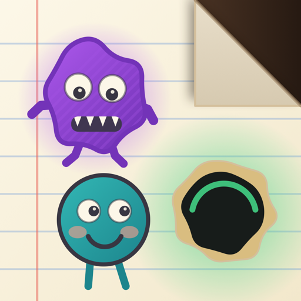

Crease Bound
Support & contact
Crease Bound is a turn-based puzzle game for iPhone and iPad. You fold one outer edge of a notebook page inward per move, guiding a doodle to its way out before the scribble monsters or the rising ink tide catch it.
Get in touch
Questions, bug reports, or feedback are welcome. Email qblink.techno@gmail.com and I'll get back to you.
It helps to include your device model, your iOS version, and the level number where the problem happened.
Meet the characters
Everyone who lives on the page, and what each one does.
The Doodle
This is youA little drawing who wants to get off the page. The Doodle cannot walk by itself. It sits on the paper, so when you fold the paper, the Doodle comes along for the ride.
Your job: fold the page until the Doodle reaches the way out.
The Way Out
Your goalA hole in the paper with a green glow around it. Get the Doodle onto this spot and you win the level.
Remember: the way out sits on the paper too, so folding moves it as well. Watch where it ends up.
Scribble
The chaserScribble walks straight at you. Every time you fold the page, it takes one step closer to the Doodle.
How to beat it: it is the easy one to guess. Think about where the Doodle will be after your fold, not where it is now.
Crease Runner
Runs along the fold lineWhen you fold the page, a new line appears where the paper bent. That line is called a crease. The Crease Runner runs along it, like a train on a track.
Fold the left or right side and it moves up or down. Fold the top or bottom and it moves left or right. Look for the dashed track under its feet.
Fold Skitter
Runs away from your foldThe Fold Skitter is a scaredy-cat. It always runs away from the side you just folded, and it never even looks at the Doodle.
Fold the left and it scoots right. Fold the top and it scoots down. That means you decide where it goes — so you can push it somewhere safe. If the push would send it off the page, it just stays still.
Crease Crosser
Steps across the fold lineThe Crease Crosser is the Crease Runner's opposite. Instead of running along the crease, it steps straight across it, toward the Doodle.
Fold the left or right side and it steps sideways at you. Fold the top or bottom and it steps up or down at you. Look for the bar with an arrow on both ends.
The Ink Tide
The clockDark ink creeping up the page. It is not a creature and it does not chase anyone — it simply rises a little bit every time you fold.
Watch out: the tide only moves when you do, so there is no rush and no timer. Take as long as you like to think. But try not to waste folds.
A handy trick
If you fold the paper over a monster, it gets pinned underneath and turns grey. A pinned monster cannot chase you any more. Trapping a monster under a fold is often the tidiest way to solve a level — and it is free.
The Power Boost New in 1.1
Beaten by a level? A Power Boost is a pushpin you can spend to pin any one monster where it stands. A pinned monster stops moving and can no longer catch the Doodle for the rest of that attempt. It stays on the page — it is not destroyed — but it is out of the game.
Tap the pushpin at the bottom of the board, then choose the monster you want pinned. Spending one is not a move: it uses no fold and does not raise the ink tide.
- You start with 3.
- You earn one more for every 5 levels you complete, up to a maximum of 10. Replaying a level you have already solved does not earn more.
- Restart gives them back. Restarting a level returns every Power Boost you spent on that attempt, so pinning the wrong monster costs you nothing but the restart.
- They cannot be bought. Crease Bound has no in-app purchases and no ads — playing is the only way to earn them.
Finishing a level with a Power Boost still completes it and still unlocks the next one. A Power Boost cannot rescue an attempt that has already ended, though, so spend it before you are caught.
Common questions
- How is my progress saved?
- Entirely on your device. Completing a level records it immediately, so closing the app — even force-quitting mid-level — never loses a solved level.
- Is there an account or a sign-in?
- No. Crease Bound is single-player and works fully offline. There is nothing to register and no server to connect to.
- Does the game need an internet connection?
- No. Every level ships inside the app and no network request is ever made.
- Can I replay a level I've already solved?
- Yes. Any unlocked level can be replayed from the level select grid at any time.
- I'm stuck on a level. Is it definitely solvable?
- Yes. Every level ships with a verified solution — each one was checked by a solver against the same rules the game plays by, so none is impossible.
- Can I undo a move?
- Not from version 1.1 onwards. Restart is the way back, and it is always available from the board and from the pause menu. Restarting begins the level again from the start and returns any Power Boosts you spent on that attempt.
- What is the Power Boost, and how do I get more?
- It pins one monster in place for the rest of the attempt, so it can no longer chase the Doodle. You start with 3 and earn one more for every 5 levels you complete, up to 10. See The Power Boost above.
- Do Power Boosts cost money?
- No. There are no in-app purchases, no ads, and no currency that can be bought. Power Boosts are earned by playing, and nothing in the game can be paid for.
- I played version 1.0 — do I keep my progress?
- Yes. Updating keeps every level you have completed. You also receive the 3 starting Power Boosts, plus any you have already earned from the levels you had finished before updating.
- When do the new monsters appear?
- Scribble is there from the start. The Crease Runner joins at Level 16, the Fold Skitter at Level 31, and the Crease Crosser at Level 41 — so each one gets introduced on its own before they start mixing.
- How do I turn off sound or haptics?
- Open Settings from the pause menu or the Home screen. Sound and haptics are controlled separately.
- I use Reduce Motion. Does the game still work?
- Yes. With Reduce Motion enabled, animations are simplified but no gameplay information is lost.
- What devices are supported?
- iPhone and iPad running iOS 26 or later. The game is played in portrait.
Release notes
What changed in each version, newest first.
- Version 1.1
-
- New: the Power Boost. Spend a pushpin to pin one monster in place for the rest of the attempt, so it can no longer chase you. You start with 3 and earn more as you finish levels. See The Power Boost.
- A full results screen. Finishing a level now opens a screen of its own instead of a small card over the board, showing how the attempt went and what it earned, with Next Level, Replay, Levels and Home.
- A help deck. Tap the ? on the title screen or at the end of the row beneath the board for cards explaining the fold, where the page lands, and each creature you have met so far. It never shows a creature you have not met, and it gives no hints about the level you are playing.
- Undo has been removed. Restart is now the way back, and it refunds any Power Boosts spent on that attempt.
- No changes to the levels, their solutions, the fold rules, or how the monsters behave. Anything solvable in 1.0 is solved the same way in 1.1.
- Version 1.0
- First release. Fifty levels, four kinds of scribble monster introduced a few levels apart, the rising ink tide, level select with saved progress, and full Reduce Motion support.
Privacy
Crease Bound collects no data, contains no ads, analytics, or in-app purchases, and makes no network requests. See the privacy policy for details.